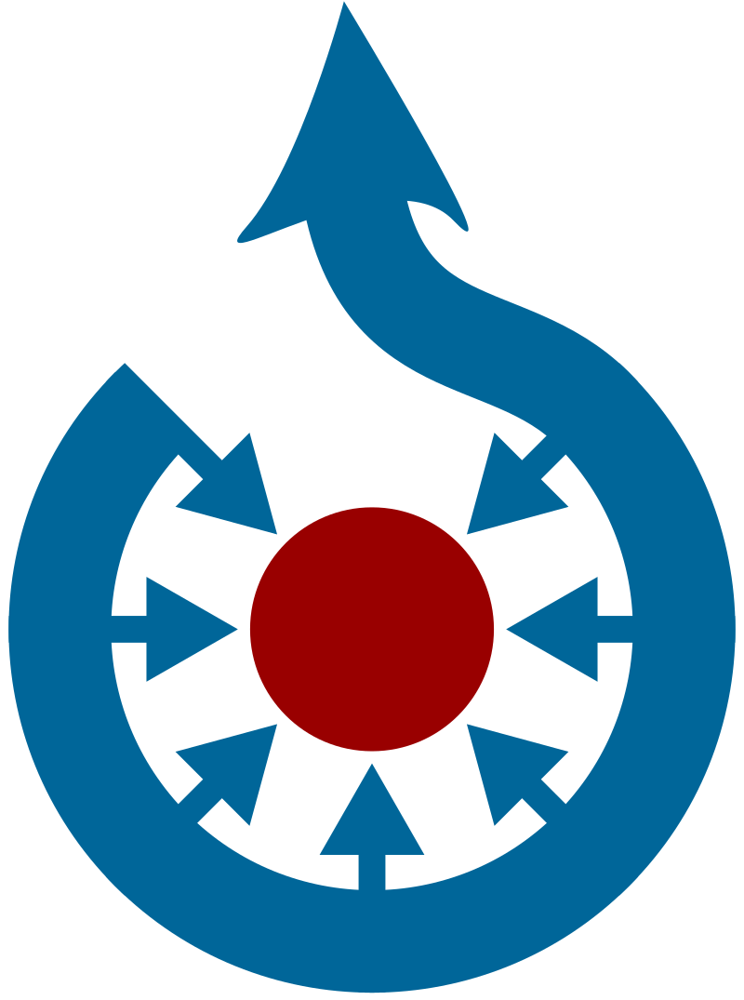

Globo terrestre

Um globo terrestre é uma representação em escala reduzida do planeta Terra. Com seu formato esférico, ele representa a superfície terrestre de maneira mais fiel que o planisfério.[1] Sua forma é arredondada, porém, não permite a visualização de toda a superfície ao mesmo tempo. Se observamos o Brasil, por exemplo, não conseguimos ver o Japão, que fica no lado oposto do globo. Já no Mapa Planisfério conseguimos ver o mapa-múndi em plano, vendo todos os países.[1] Um globo terrestre tem às vezes relevo, mostrando a topografia. Se usar uma escala exagerada para o relevo, de forma que resulte visível.[2] A maior parte dos globos terrestres modernos incluem também paralelos e meridianos, de modo que se possa efetuar uma localização na superfície do planeta.[3]
Origem
Martin Behaim, um polímata que sabia muito de Geografia e Filosofia e também um habilidoso vendedor foi o criador do globo terrestre Erdapfel. O "maçã da terra" evidencia como o mundo era compreendido no final do século XV. Foi concluído em 1492, portanto as Américas não estão representadas. Behain fez inúmeras viagens pelo mundo para poder realizar o seu projeto: o Erdapfel. Como líder forneceu todas as informações necessárias para a sua realização. Dentre suas inúmeras fontes está incluso o trabalho de Ptolemeu. O trabalho foi concluído em dois anos (1492). O respeitado xilógrafo Georg Glockenon que também gravava e pintava foi quem pintou o Erdapfel. Mesmo para a época o Maçã da Terra possui um número significativo de imprecisões. Depois de pronto a peça foi exposta na prefeitura de Nuremberg, Alemanha. Sabe-se que lá ficou exposto até por volta de 1500, depois foi entregue à família Behain. No início do século XX a família o emprestou ao Museu Nacional Alemão, em Nuremberga. Dois anos antes da Segunda Guerra Mundial foi comprado por funcionários do estabelecimento, a pedido de Adolf Hitler, que que considerava o Erdapfel um artefato importante e não se deveria correr o risco de o globo atravessar as fronteiras
Fabricação
Tradicionalmente, os globos eram feitos com gomos (tiras) de papel longos e finos que eram colados entre um polo e outro. Quanto mais tiras, menos amassado e mais homogêneo o mapa fica na esfera. Este método de fabricação de globo foi ilustrado em 1802 em uma gravura na The English Encyclopedia por George Kearsley.[8][9] Os globos modernos são geralmente feitos de termoplástico. Discos planos de plástico são impressos com um mapa distorcido de um dos hemisférios da Terra. Este é colocado em uma máquina que molda o disco em forma de globo, posteriormente, as duas partes são unidas para formar o globo terrestre completo.[9] Normalmente, um globo é montado de forma que seu eixo de rotação seja 23,5 ° (0,41 rad) da vertical, que é o ângulo que o eixo de rotação da Terra desvia da perpendicular ao plano de sua órbita. Essa montagem facilita a visualização de como as estações mudam.
Referências
- Projeto RADIX; Valquíria Pires; Bellucci. Geografia. Editora Scipione. p. 17 ISBN 978-852627345-0
- informação.gov.br. O Globo Terrestre - Descritivo. - Página visitada 16/8/12
- mundovestibular.com. Geografia. O Globo Terrestre - Página visitada 16/8/12
- «Crates de Malos - Portal Graecia Antiqua». greciantiga.org. Consultado em 6 de abril de 2021
- O Globo Terrestre e seu Uso na Geografia
- «Globo Terrestre saiba como surgiu e onde comprar!». Blog Valejet. 29 de agosto de 2017. Consultado em 6 de abril de 2021
- «The oldest terrestrial globe – Erdapfel /Earth Apple, made in 1492». The Vintage News (em inglês). 11 de novembro de 2016. Consultado em 6 de abril de 2021
- «Plans for constructing globes». Fine Rare Prints Antique Prints and Maps (em inglês). Consultado em 23 de abril de 2021
- «Descubra como os globos terrestres eram produzidos antigamente». MegaCurioso - As curiosidades mais interessantes estão aqui. 14 de novembro de 2018. Consultado em 23 de abril de 2021
|  | O Commons possui imagens e outros ficheiros sobre Globo terrestre |